4.6. Kernel Approximation¶
This submodule contains functions that approximate the feature mappings that correspond to certain kernels, as they are used for example in support vector machines (see Support Vector Machines). The following feature functions perform non-linear transformations of the input, which can serve as a basis for linear classification or other algorithms.
The advantage of using approximate explicit feature maps compared to the
kernel trick,
which makes use of feature maps implicitly, is that explicit mappings
can be better suited for online learning and can significantly reduce the cost
of learning with very large datasets.
Standard kernelized SVMs do not scale well to large datasets, but using an
approximate kernel map it is possible to use much more efficient linear SVMs.
In particular, the combination of kernel map approximations with
SGDClassifier can make non-linear learning on large datasets possible.
Since there has not been much empirical work using approximate embeddings, it is advisable to compare results against exact kernel methods when possible.
See also
Polynomial regression: extending linear models with basis functions for an exact polynomial transformation.
4.6.1. Nystroem Method for Kernel Approximation¶
The Nystroem method, as implemented in Nystroem is a general method
for low-rank approximations of kernels. It achieves this by essentially subsampling
the data on which the kernel is evaluated.
By default Nystroem uses the rbf kernel, but it can use any
kernel function or a precomputed kernel matrix.
The number of samples used - which is also the dimensionality of the features computed -
is given by the parameter n_components.
4.6.2. Radial Basis Function Kernel¶
The RBFSampler constructs an approximate mapping for the radial basis
function kernel, also known as Random Kitchen Sinks [RR2007]. This
transformation can be used to explicitly model a kernel map, prior to applying
a linear algorithm, for example a linear SVM:
>>> from sklearn.kernel_approximation import RBFSampler
>>> from sklearn.linear_model import SGDClassifier
>>> X = [[0, 0], [1, 1], [1, 0], [0, 1]]
>>> y = [0, 0, 1, 1]
>>> rbf_feature = RBFSampler(gamma=1, random_state=1)
>>> X_features = rbf_feature.fit_transform(X)
>>> clf = SGDClassifier()
>>> clf.fit(X_features, y)
SGDClassifier(alpha=0.0001, average=False, class_weight=None, epsilon=0.1,
eta0=0.0, fit_intercept=True, l1_ratio=0.15,
learning_rate='optimal', loss='hinge', n_iter=5, n_jobs=1,
penalty='l2', power_t=0.5, random_state=None, shuffle=True,
verbose=0, warm_start=False)
>>> clf.score(X_features, y)
1.0
The mapping relies on a Monte Carlo approximation to the
kernel values. The fit function performs the Monte Carlo sampling, whereas
the transform method performs the mapping of the data. Because of the
inherent randomness of the process, results may vary between different calls to
the fit function.
The fit function takes two arguments:
n_components, which is the target dimensionality of the feature transform,
and gamma, the parameter of the RBF-kernel. A higher n_components will
result in a better approximation of the kernel and will yield results more
similar to those produced by a kernel SVM. Note that “fitting” the feature
function does not actually depend on the data given to the fit function.
Only the dimensionality of the data is used.
Details on the method can be found in [RR2007].
For a given value of n_components RBFSampler is often less accurate
as Nystroem. RBFSampler is cheaper to compute, though, making
use of larger feature spaces more efficient.

Comparing an exact RBF kernel (left) with the approximation (right)
4.6.3. Additive Chi Squared Kernel¶
The additive chi squared kernel is a kernel on histograms, often used in computer vision.
The additive chi squared kernel as used here is given by

This is not exactly the same as sklearn.metrics.additive_chi2_kernel.
The authors of [VZ2010] prefer the version above as it is always positive
definite.
Since the kernel is additive, it is possible to treat all components
 separately for embedding. This makes it possible to sample
the Fourier transform in regular intervals, instead of approximating
using Monte Carlo sampling.
separately for embedding. This makes it possible to sample
the Fourier transform in regular intervals, instead of approximating
using Monte Carlo sampling.
The class AdditiveChi2Sampler implements this component wise
deterministic sampling. Each component is sampled  times, yielding
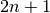 dimensions per input dimension (the multiple of two stems
from the real and complex part of the Fourier transform).
In the literature, is usually chosen to be 1 or 2, transforming
the dataset to size
times, yielding
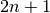 dimensions per input dimension (the multiple of two stems
from the real and complex part of the Fourier transform).
In the literature, is usually chosen to be 1 or 2, transforming
the dataset to size n_samples * 5 * n_features (in the case of 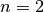).
The approximate feature map provided by AdditiveChi2Sampler can be combined
with the approximate feature map provided by RBFSampler to yield an approximate
feature map for the exponentiated chi squared kernel.
See the [VZ2010] for details and [VVZ2010] for combination with the RBFSampler.
4.6.4. Skewed Chi Squared Kernel¶
The skewed chi squared kernel is given by:
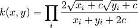
It has properties that are similar to the exponentiated chi squared kernel often used in computer vision, but allows for a simple Monte Carlo approximation of the feature map.
The usage of the SkewedChi2Sampler is the same as the usage described
above for the RBFSampler. The only difference is in the free
parameter, that is called  .
For a motivation for this mapping and the mathematical details see [LS2010].
.
For a motivation for this mapping and the mathematical details see [LS2010].
4.6.5. Mathematical Details¶
Kernel methods like support vector machines or kernelized
PCA rely on a property of reproducing kernel Hilbert spaces.
For any positive definite kernel function  (a so called Mercer kernel),
it is guaranteed that there exists a mapping
(a so called Mercer kernel),
it is guaranteed that there exists a mapping  into a Hilbert space 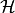, such that
into a Hilbert space 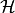, such that
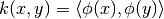
Where 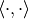 denotes the inner product in the Hilbert space.
If an algorithm, such as a linear support vector machine or PCA,
relies only on the scalar product of data points , one may use
the value of 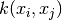, which corresponds to applying the algorithm
to the mapped data points  .
The advantage of using is that the mapping never has
to be calculated explicitly, allowing for arbitrary large
features (even infinite).
.
The advantage of using is that the mapping never has
to be calculated explicitly, allowing for arbitrary large
features (even infinite).
One drawback of kernel methods is, that it might be necessary
to store many kernel values during optimization.
If a kernelized classifier is applied to new data  ,
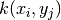 needs to be computed to make predictions,
possibly for many different in the training set.
,
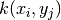 needs to be computed to make predictions,
possibly for many different in the training set.
The classes in this submodule allow to approximate the embedding
, thereby working explicitly with the representations
, which obviates the need to apply the kernel
or store training examples.
References:
| [RR2007] | (1, 2) “Random features for large-scale kernel machines” Rahimi, A. and Recht, B. - Advances in neural information processing 2007, |
| [LS2010] | “Random Fourier approximations for skewed multiplicative histogram kernels” Random Fourier approximations for skewed multiplicative histogram kernels - Lecture Notes for Computer Sciencd (DAGM) |
| [VZ2010] | (1, 2) “Efficient additive kernels via explicit feature maps” Vedaldi, A. and Zisserman, A. - Computer Vision and Pattern Recognition 2010 |
| [VVZ2010] | “Generalized RBF feature maps for Efficient Detection” Vempati, S. and Vedaldi, A. and Zisserman, A. and Jawahar, CV - 2010 |